Here Are All of My Cool Projects That I Have Worked On!
I have had the oppurtunity of working on many very cool projects due to Southern State Community Colleges Computer Sciences program. I have also had similair oppertunities from my time at the University of Cincinnati.
University of Cincinnati
My HTML and CSS Projects
My html class has been very fun and fulfilling and full of hands on projects that resulted in something more than a paper as a result and are much more fun showing off. Throughout this class I have learned about HTML and CSS primarily, but also delved a little bit into JavaScript for a project.
- Page Layout Challenge
- Flex-Box Lab
- CSS Grid Lab
- JS Research Project
Other Class Assignments
My Flipper Zero Presentation
This presentation was to demonstrate the information I learned during my class Implications of IT. The topic I picked for this presentation was the penetration testing tool, a Flipper Zero. More about the Flipper Zero can be found Here

 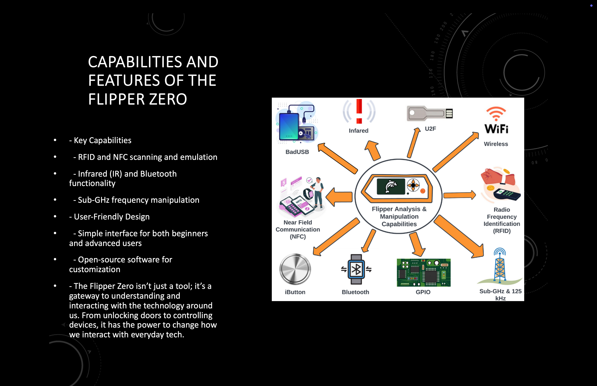
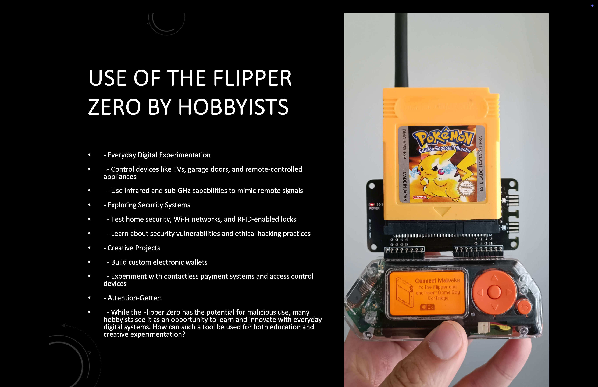
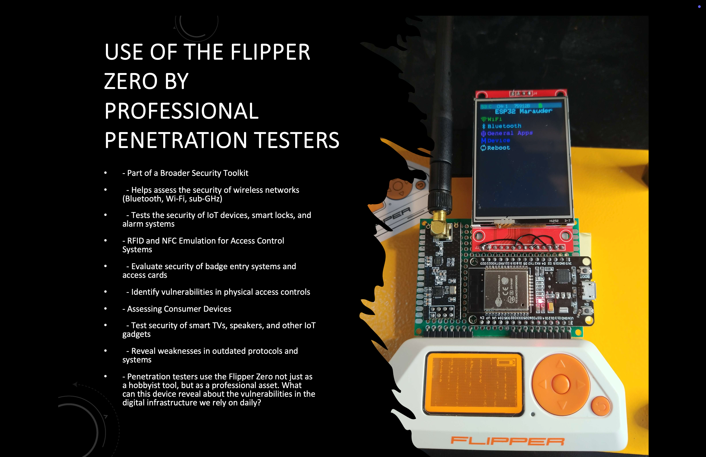
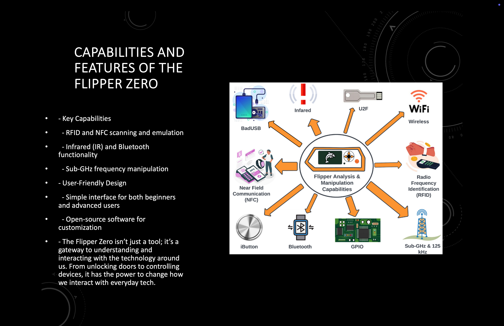
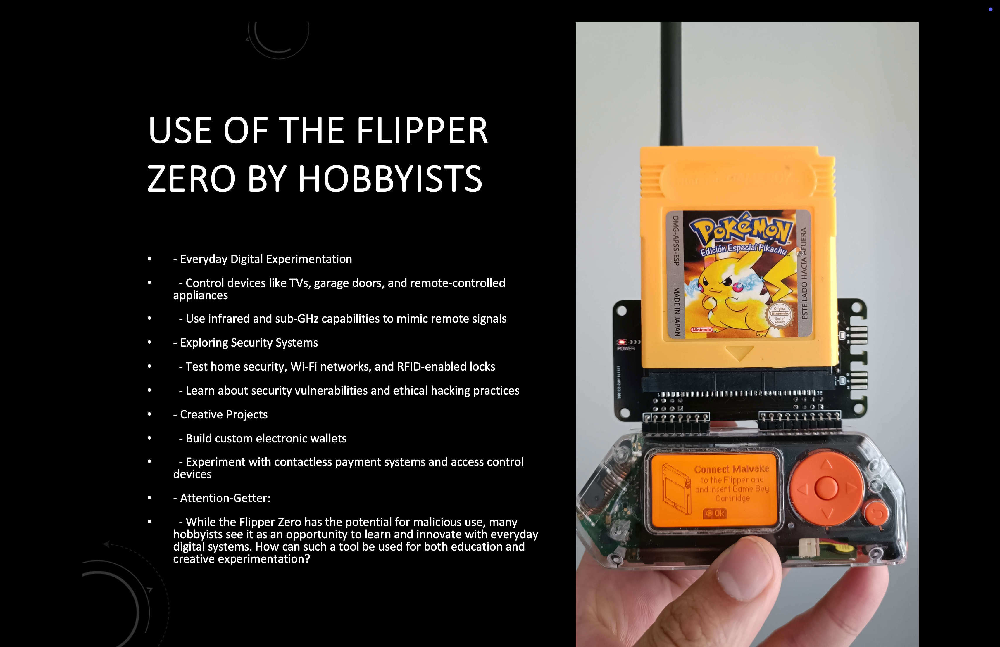
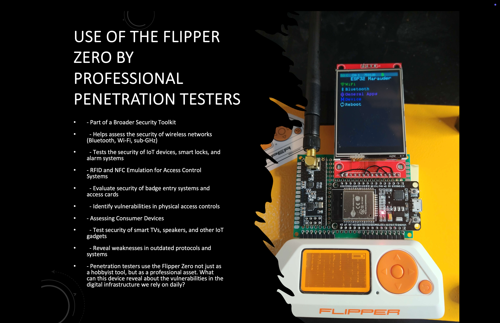
 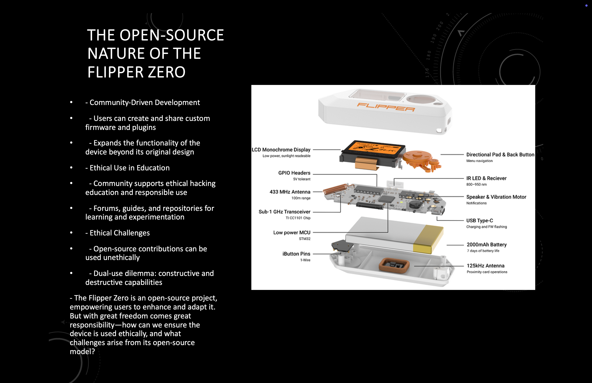
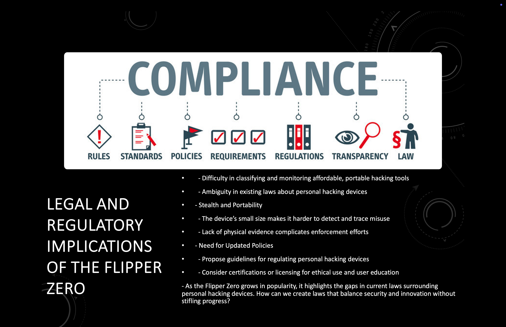
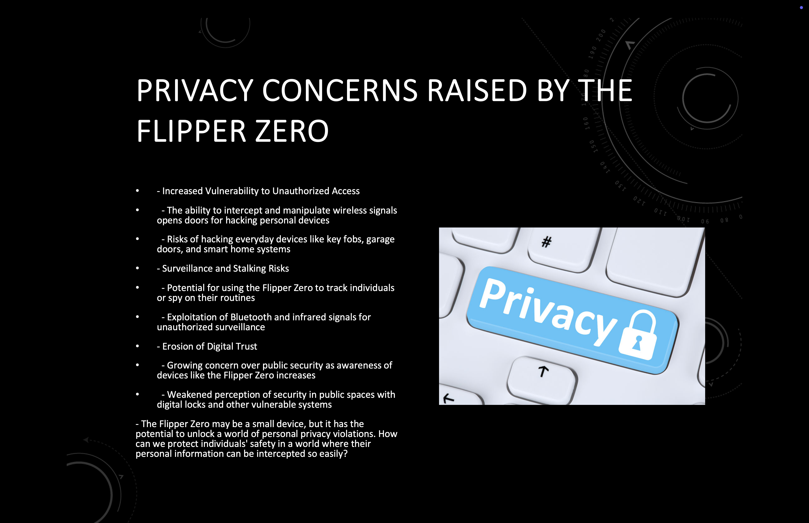
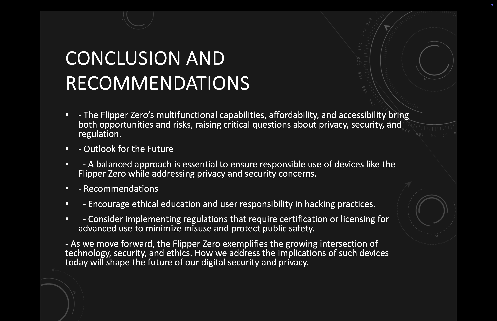
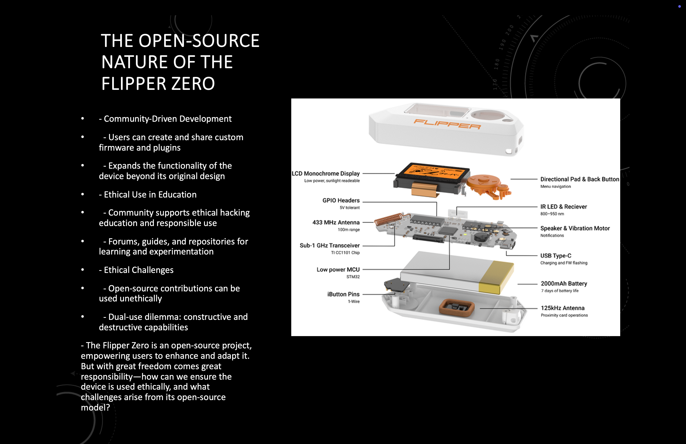
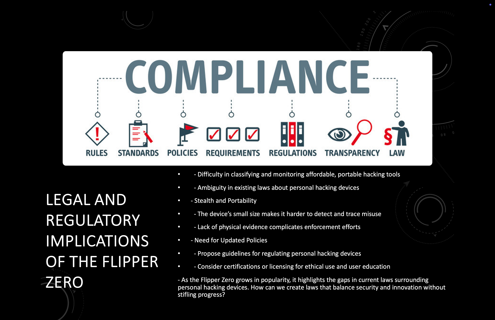
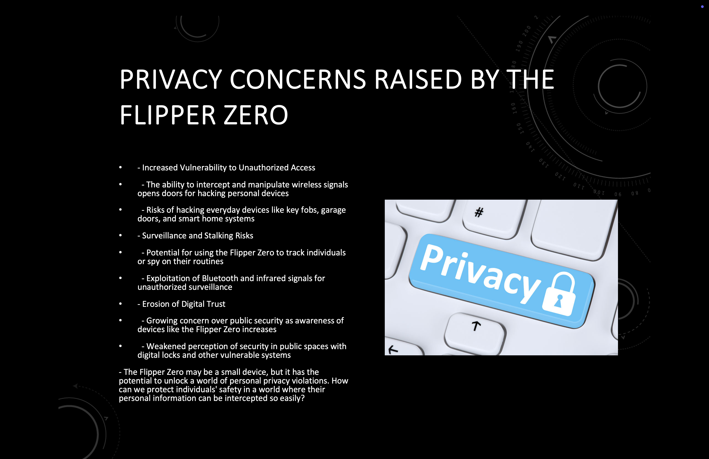
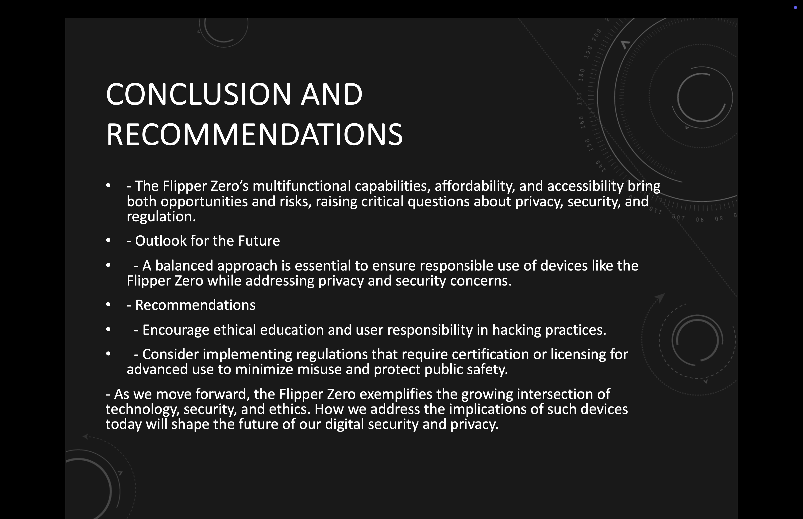

Southern State
My Cybersecurity Employee Training Videos
This project was the result of a research paper that I wrote about the cybersecurity knowledge gap between technical and non-technical end users. My research pointed to the reason for this gap was education, which makes sense as you don't know what you don't know. As a result my project was to make user training videos that were non-technical but would still strengthin and promote a culture of cybersecurity as the end user is the first line of defense for an organization.
My StarGate Project
This praject started when my proffesor suggested that I do this really cool project and it shouldn't be that hard becuase the code is already made. Well 250+ hours later I finally finished it. I learned alot throughout this project. It was frustraing, challenging, and rewarding. I made all of the wires in this project and used over 10 ft when it was all said and done. The brain of this project was a Raspberry Pi. It was a custom command-line linux based OS. I had to tweak the python within to make sure that everything worked with the equipment that I had. It includes 1 Raspberry Pi, 3 motor controller hats, 8 motors, 21 lights with custom made PCB, an LED strip, a speaker, a mirror, a two way mirror, a custom PCB with lights and buttons, and over 8 Kg of filament. All of the 3D files were already made, but I had to tweak them to make them work with the schools printers. You can find out more about the project from the creators: Here
My Half-Scale R2-D2 Dome
This Half-Scale R2-D2 Dome was created by my proffesor Dr. Josh Montgomery for the Ohio Code Scholar program. This dome is a project based educational tool to teach elementary through high school students Engineering principles. It promotes the idea of failing forward. The lessons learned through failing, in one word perseverance. The skills include 3D design, 3D printing, circuitry, wiring, coding, project management, and soldering. As well as soft skills including, communication, teamwork, and leadership. My dome was the trial dome and was made and updated through the many versions of domes. It is made of two 3D prints so the dome is split down the middle for easy access to the inside. Each part part took over 24 hours to print on the printers that we had at the school. The brains of this project is an Arduino Uno. We used C++ but found that the coding logic could be difficult for younger students so we used Arduino Blocks as well. Arduino Blocks are a drag and drop way of coding. The dome consists of 2 3D printer halfs, an Arduino Uno, 3 LED lights, 2 servos, 2 mini breadboards, jumper cables, and a little bit of super glue. Being apart of this oppurtunity allowed me to travel to the Star Wars Celebration in Anaheim California where I assisted in teaching coding to elementary students to grandparents. It also allowed me to be on the news for ABC 6 Columbus which you can see: Here

My Battlebot
This project was the second year of the Ohio Code Scholar program. It was proposed by a member of the program. It is a popular form of projects for high school and college students. This project put a huge emphisis on individual creativity. The entire base and the weapon system had to be 3D designed and printed. I was again the trial test builder. The base model for the bot has an Arduino Nano and 4 motors for wheels. I built it with the base pieces, a larger motor, a sensor, a motor hat, and a 3D designed and printed circular saw. Here is a link to a post about the celebration that we held: Here


My Games Made For Recruitment Events
These games were created for recruitment events for the Computer Science program at Southern State Community College. They were inspired by the want to show potential students some of the cool things that we do and learn by being apart of the program. They were written in either Java or Python. I am not a coding student but I found the project to be very challanging but fulfilling. One game is guessing a password by using hints to uncover the password focusing on cybersecurity concepts. The second is a simple logic statment that needs to be completed focusing on coding basics. The third is demonstrating a simplified version of Dijkstra algorithm focusing on networking concepts.